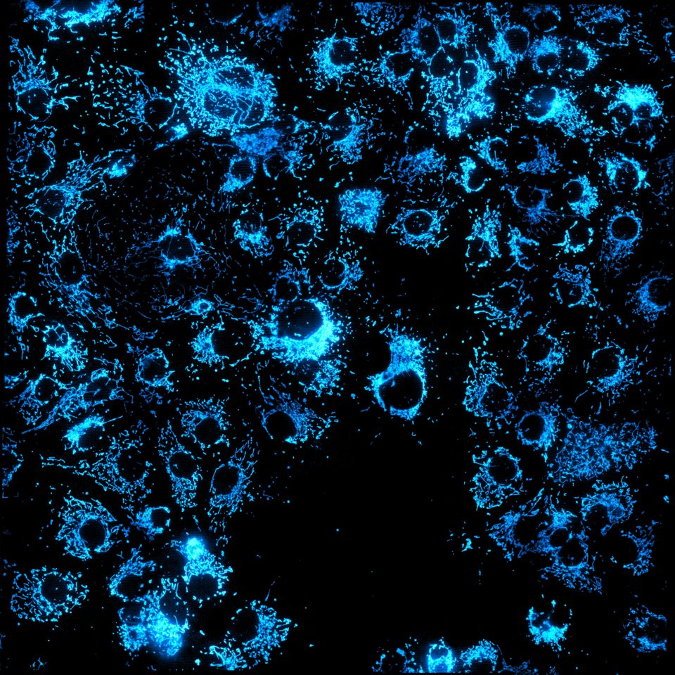

About
I'm a physicist with a passion for experimental and quantitative biology. I build and apply new microscopy strategies to uncover the physical rules that govern biological processes.
As a Research Associate in the lab of Prof. Johan Paulsson in the Department of Systems Biology at Harvard Medical School, I combine advanced microscopy with microfluidics to study how plasmids control their own replication.
I started out in super-resolution microscopy and biophysics. For my PhD with Prof. Suliana Manley at EPFL (Switzerland), I developed high-throughput and adaptive super-resolution methods that make these techniques faster and gentler on living cells. I then used them to look at organelles in new ways, from the architecture of centrioles to randomness in mitochondrial division.
Research
 Current
Current
Plasmid replication control
Single-cell imaging and microfluidics to investigate the mechanisms plasmids use to control their own replication.
 Methods
Methods
High-throughput super-resolution
Homogeneous multifocal illumination that turns super-resolution microscopy into a large field-of-view, high-throughput technique. Simulation code →
 Methods
Methods
Adaptive, event-driven microscopy
Smart microscopes that detect rare events in real time and change acquisition on the fly, capturing more information with less light damage. EDA tools →

BiologyMitochondrial dynamics
Live-cell super-resolution imaging of where and why mitochondria divide, and the role of chance in mitochondrial fission.
Publications
- Event-driven acquisition for content-enriched microscopy
- Flipper probes for the community
- Distinct fission signatures predict mitochondrial degradation or biogenesis
- Mitochondrial membrane tension governs fission
- Homogeneous multifocal excitation for high-throughput super-resolution imaging
- Characterization of flat-fielding systems for quantitative microscopy
- Strategies for increasing the throughput of super-resolution microscopies
- Mechanosensitive fluorescent probes to image membrane tension in mitochondria, endoplasmic reticulum, and lysosomes
Contact
I'm always happy to talk about microscopy, single-cell biophysics or collaborations. The best way to reach me is dora_mahecic@hms.harvard.edu.